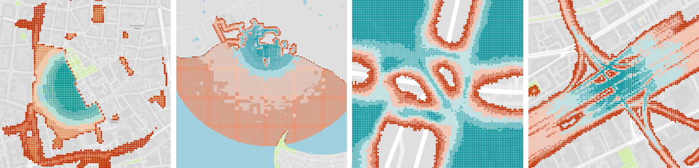

ProMis - Probabilistic Mission Design
ProMis (Probabilistic Mission Design) is a framework for designing and executing missions for autonomous agents, like drones, while adhering to a set of rules and constraints. It uses probabilistic first-order logic to reason about uncertainties in the environment and the agent’s state, ensuring that the agent acts in a principled and explainable manner.
The image below shows ProMis being applied in a diverse set of scenarios. High-probability areas (safe to fly) are shown in blue, low-probability areas are shown in red, and unsuitable spaces are transparent.
What is ProMis?
ProMis allows users to formalize their knowledge about local rules, such as traffic regulations, to constrain an agent’s actions and motion. By employing a mathematical framework that combines formal reasoning with probabilistic inference, ProMis provides a weighted belief about whether the encoded rules are satisfied for any given state.
This paves the way towards Constitutional Agents; agents that can justify their actions and operate predictably even under uncertainty. ProMis offers high-level, adaptable control over the navigation process, making it easy to integrate local laws, operator requirements, and environmental uncertainties into logical and spatial constraints.
The output of ProMis is a set of scalar fields representing the probability of adhering to the agent’s “constitution” across its state-space. These can be used for path planning, automated clearance granting, and optimizing mission parameters.
Key Features
Declarative Rule Engine: Define complex rules and constraints using probabilistic first-order logic.
Geospatial Reasoning: Natively handles spatial data and relationships, including uncertainties.
Constitutional Agents: Build agents that adhere to and explain their behavior based on a defined constitution.
Probabilistic Inference: Quantify and reason about uncertainty in sensor data, environmental models, and agent state.
Flexible & Extensible: Easily integrate with existing navigation and control systems.
Visualization: Generate Probabilistic Mission Landscapes for intuitive mission analysis and planning.